TFcheckpoint Dataset visualization using UMAP
Last updated: 17 December, 2021
Input
Loading libraries:
library(xfun)
library(dplyr)
library(scales)
library(tibble)
library(tidyr)
library(readr)
library(ggplot2)
library(uwot)
library(VennDiagram)
library(ggforce)Intro
TFcheckpoint (Chawla et al. 2013) is a curated database with sequence-specific DNA-binding RNA polymerase II transcription-factor proteins (DbTFs). It has been updated to include several co-TFs and other unclassified proteins since the first publication.
Old Dataset
The form of the dataset is as follows: a total of \(4705\) proteins, each one represented by a row, are enriched with GO annotations (a total of \(8621\) GO terms (Carbon et al. 2019)) that indicate the presence (\(1\)) or absence (\(0\)) of a particular molecular function. The dataset is provided as a tab-delimited zipped file.
Analysis on this dataset was performed November 2020.
New Dataset
The new dataset features an updated curated list of \(3842\) proteins that are part of TFcheckpoint (TFch2, v2.0).
For each of these proteins, we have gathered Gene ontology (GO) IDs from the ftp site of the GO database (files were downloaded on the 8th of November) and produced the full GO annotations for each protein, the annotations without IEA (Electronic Annotations) and the GO terms associated only with IEA evidence.
We cross-referenced the InterPro domains for each protein, using UniProt’s ID mapping online service (UniProtKB for To mapping option and selecting the appropriate columns).
Also the corresponding gene names (HGNC) were collected using the Uniprot’s uploadlist website on the 8th of November.
For each protein in TFch2, we also calculated a score denoting the probability of a protein being a transcription factor using DeepTFactor (Kim et al. 2021).
The resulting data file is available as a tab-delimited file (timestamp 16/11/2021).
Analysis on this dataset was performed June-November 2021 (sporadically :) and will be featured in the second TF-checkpoint paper.
On UMAP
In this analysis we present a 2D visualization of the TF-checkpoint dataset using the non-linear dimension reduction method UMAP (McInnes, Healy, and Melville 2018). This method will reduce for example the size of the old dataset from \((4705 \times 8621)\) to \((4705 \times 2)\) while efficiently identifying groups of proteins with the same molecular characterization. These groups are indicated by varying size clusters in the 2D plane.
Analysis (Old Dataset)
See script umap.R for more details about the presented analysis.
Tuning the number of neighbors
We first run the UMAP on the dataset in unsupervised mode to see how well it clusters the GO-enriched protein data. We used the default euclidean distance metric to find nearest neighbors for every data point (GO-annotated protein). We first tune one of the most important parameters, i.e. the number of neighbors, where larger values result in more global views of the dataset, while smaller values result in more local data being preserved. After UMAP returns the 2D optimized coordinates for the proteins, we color each protein according to its corresponding value for the DNA binding GO term, in order to assess if UMAP can at least distinguish between DNA binding (DbTFs) and non DNA-binding TFs (non-DbTFs).
knitr::include_graphics(path = 'img/tf_umap_2n.png')
knitr::include_graphics(path = 'img/tf_umap_4n.png')

Figure 1: Unsupervised UMAP of the TFcheckpoint dataset using 2 and 4 neighbors. DbTFs are colored atop the 2D embedding.
knitr::include_graphics(path = 'img/tf_umap_6n.png')
knitr::include_graphics(path = 'img/tf_umap_8n.png') 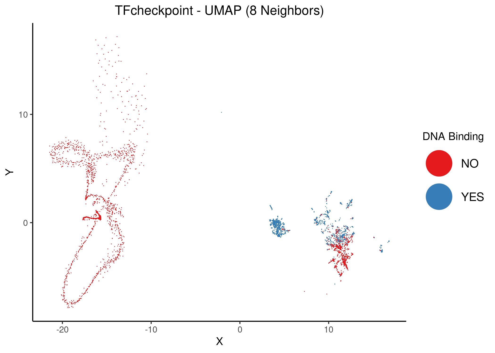
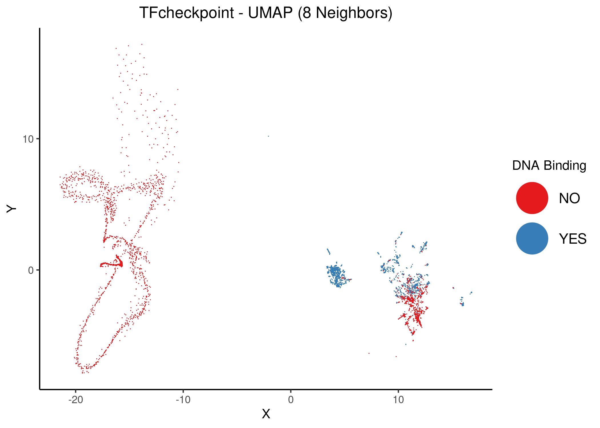
Figure 2: Unsupervised UMAP of the TFcheckpoint dataset using 6 and 8 neighbors. DbTFs are colored atop the 2D embedding.
knitr::include_graphics(path = 'img/tf_umap_10n.png')
knitr::include_graphics(path = 'img/tf_umap_12n.png') 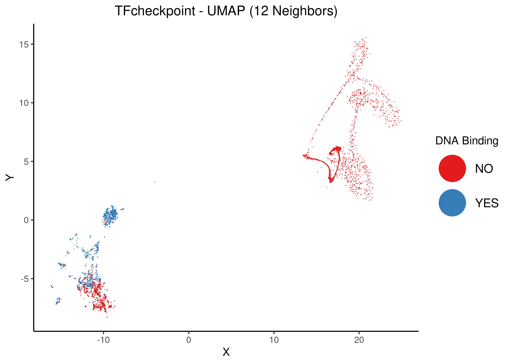
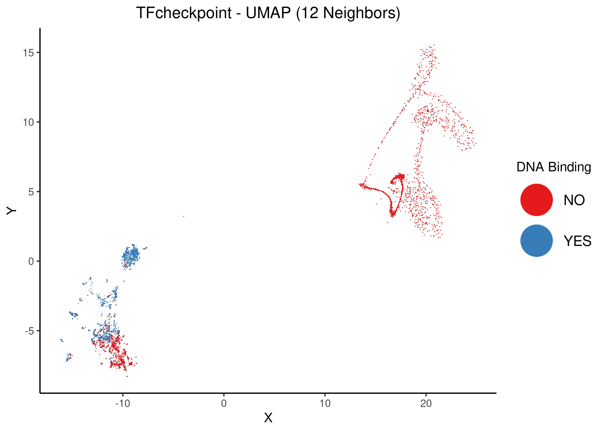
Figure 3: Unsupervised UMAP of the TFcheckpoint dataset using 10 and 12 neighbors. DbTFs proteins are colored atop the 2D embedding.
knitr::include_graphics(path = 'img/tf_umap_14n.png')
knitr::include_graphics(path = 'img/tf_umap_15n.png')Figure 4: Unsupervised UMAP of the TFcheckpoint dataset using 14 and 15 neighbors. DbTFs are colored atop the 2D embedding.
knitr::include_graphics(path = 'img/tf_umap_17n.png')
knitr::include_graphics(path = 'img/tf_umap_20n.png')Figure 5: Unsupervised UMAP of the TFcheckpoint dataset using 17 and 20 neighbors. DbTFs are colored atop the 2D embedding.
Lastly, using as basis the embedding with \(12\) neighbors, we annotate two cases of DbTFs that stand out from the clustered data:
knitr::include_graphics(path = 'img/12n_extra/tf_umap_12n_annot.png')Figure 6: Unsupervised UMAP of the TFcheckpoint dataset using 12 neighbors. DbTFs proteins are colored atop the 2D embedding. Two distinct examples of DbTFs have been annotated: the AHDC1 and the Heat shock factor proteins.
For \(\ge 8-10\) neighbors, UMAP splits the dataset to \(3\) distinct TF protein superclusters:
- One of superclusters has strictly non-DbTFs and can be practically identified by one of the reduced dimensions (it does not matter which one you choose when observing more global views of the dataset, i.e. with larger number of neighbors, the following is enough: \(X>0 \text{ or } Y<0\)). Interestingly, there is only one protein that is a DbTF and resides within this cluster as shown above and that protein is AHDC1.
- One supercluster has mostly DbTFs.
A set of them is somewhat apart from the parent supercluster, namely the heat shock factor proteins.
The complete list includes these proteins:
HSF1,HSF2,HSF4,HSF5,HSFX1,HSFY1,HSFY2,HSFX2,HSFX3,HSFX4(their \((X,Y)\) coordinates are really close and are thus presented as one point in the map). - One supercluster has a mix of both DbTFs and non-DbTFs. Since this cluster is closer to the second one, it point to us the fact that the included non-DbTFs have molecular functions that are more similar to DbTFs compared with the far off first supercluster that includes the pure (so-to-speak) DbTFs.
GREEKC curated DbTF list
Members of the GREEKC consortium curated a list of DbTFs.
Comparing this list with the proteins that have the GO term DNA binding in the TF checkpoint dataset we have the following contingency table (\(1\) corresponds to a DbTF label, \(0\) to a non-DbTF label):
dbtf_stats = readRDS(file = 'data/dbtfs_go_greekc_stats.rds')
knitr::kable(dbtf_stats)| GO-DbTF | GREEKC-DbTF | n |
|---|---|---|
| 0 | 0 | 2751 |
| 1 | 0 | 512 |
| 0 | 1 | 86 |
| 1 | 1 | 1356 |
We calculate the percent agreement and Cohen’s \(\kappa\):
n_total = dbtf_stats$n %>% sum()
data_00 = dbtf_stats %>% filter(`GO-DbTF` == 0, `GREEKC-DbTF` == 0) %>% pull(n)
data_10 = dbtf_stats %>% filter(`GO-DbTF` == 1, `GREEKC-DbTF` == 0) %>% pull(n)
data_01 = dbtf_stats %>% filter(`GO-DbTF` == 0, `GREEKC-DbTF` == 1) %>% pull(n)
data_11 = dbtf_stats %>% filter(`GO-DbTF` == 1, `GREEKC-DbTF` == 1) %>% pull(n)
# calculate percent agreement
percent = (data_00 + data_11)/n_total
scales::percent(percent)[1] "87%"# Cohen's kappa
p0 = (data_00 + data_01)/n_total * (data_00 + data_10)/n_total
p1 = (data_11 + data_01)/n_total * (data_11 + data_10)/n_total
p_rand = p0 + p1
cohen_k = (percent - p_rand)/(1 - p_rand)
scales::percent(cohen_k)[1] "72%"There is a substantial level of agreement between the GO DNA-binding annotation and the DbTF GREEKC list.
Using the UMAP coordinates with \(12\) neighbors, we color the data points according to the GREEKC annotated DbTFs labels and boxify the corresponding superclusters:
knitr::include_graphics(path = 'img/12n_extra/tf_umap_12n_greekc_dbtfs.png')
Figure 7: Unsupervised UMAP of the TFcheckpoint dataset using 12 neighbors. DbTFs proteins according to the curated GREEKC list are colored atop the 2D embedding. The three protein superclusters have been given corresponding ids.
For more info, see the data file with the protein names, the cluster id, the GREEKC DbTF and the GO term DNA binding annotation.
We also color the same points according to the values presented in the contingency table above (including thus all \(4\) cases of proteins as annotated by the GREEKC and the DNA-binding GO term):
knitr::include_graphics(path = 'img/12n_extra/tf_umap_12n_go_vs_greekc_dbtfs.png')
Figure 8: Unsupervised UMAP of the TFcheckpoint dataset using 12 neighbors. Proteins are pre-assigned to 4 groups depending on the value of the corresponding DNA-binding GO term and if are in the curated GREEKC list of DbTFs.
- There are a lot more DbTFs now residing inside the non-DbTF supercluster (No. \(3\))
- The No. \(1\) supercluster with no DbTFs has become a bit more distinguished, i.e. almost all it’s points are non-DbTFs according to the GREEKC list information.
- Maybe the curated list better reflects the clustered data than the DNA-binding GO term thus?
Tuning minimum distance
Choosing \(15\) as a base value for the number of neighbors, we will tune the min_dist UMAP parameter which is the effective minimum distance between the embedded points (the default value presented in the previous figures was \(0.01\)).
As the documentation says, smaller min_dist values will result in a more clustered/clumped embedding where nearby points on the manifold are drawn closer together, while larger values will result on a more even dispersal of points.
The idea here is to keep the separation of the \(3\) superclusters as much as possible, while spreading out the embedded points.
knitr::include_graphics(path = 'img/tf_umap_15n_mindist_0.05.png')
knitr::include_graphics(path = 'img/tf_umap_15n_mindist_0.1.png')
Figure 9: Unsupervised UMAP of the TFcheckpoint dataset using 15 neighbors and different values of the mind_dist parameter. DbTFs are colored atop the 2D embedding.
knitr::include_graphics(path = 'img/tf_umap_15n_mindist_0.3.png')
knitr::include_graphics(path = 'img/tf_umap_15n_mindist_0.5.png')

Figure 10: Unsupervised UMAP of the TFcheckpoint dataset using 15 neighbors and different values of the mind_dist parameter. DbTFs are colored atop the 2D embedding.
knitr::include_graphics(path = 'img/tf_umap_15n_mindist_0.7.png')
knitr::include_graphics(path = 'img/tf_umap_15n_mindist_1.png')

Figure 11: Unsupervised UMAP of the TFcheckpoint dataset using 15 neighbors and different values of the mind_dist parameter. DbTFs are colored atop the 2D embedding.
For min_dist \(\gt 0.1\), the separation of the superclusters (specifically for the \(2\) top-left ones) dissolves.
GREEKC curated co-TF list
Members of the GREEKC consortium curated also a list of co-TFs (if I understood correctly this was created from the TcoF database (v1) and a previous version of TFcheckpoint so it’s an old list of co-TFs). This list has a total of \(522\) proteins, out of which only \(239\) are included in the TFcheckpoint dataset.
Comparing this list of proteins with the curated list of DbTFs we have the following contingency table (\(1\) corresponds to the existence of a particular label, \(0\) to it’s absence), where no protein has been labeled both as a co-TF and a DbTF:
db_cotf_stats = readRDS(file = 'data/db_cotf_stats.rds')
knitr::kable(db_cotf_stats)| GREEKC-DbTF | GREEKC-coTF | n |
|---|---|---|
| 0 | 0 | 3024 |
| 1 | 0 | 1442 |
| 0 | 1 | 239 |
| 1 | 1 | 0 |
We now use the unsupervised UMAP result with \(12\) neighbors and color the proteins according to the three categories described above:
knitr::include_graphics(path = 'img/12n_extra/tf_umap_12n_co_vs_dbtfs.png')
Figure 12: Unsupervised UMAP of the TFcheckpoint dataset using 12 neighbors. Data points (proteins) have been colored according to their classification in the joint DbTF and co-TF GREEKC lists atop the 2D embedding
We perform the same coloring with the UMAP coordinates from the \(15\) neighbors and different values of min_dist, to have a better picture of the clustering results:
knitr::include_graphics(path = 'img/cotf_vs_dbtf/tf_umap_15n_mindist_0.05.png')
knitr::include_graphics(path = 'img/cotf_vs_dbtf/tf_umap_15n_mindist_0.1.png')
Figure 13: Unsupervised UMAP of the TFcheckpoint dataset using 15 neighbors and different values of the mind_dist parameter. Data points (proteins) have been colored according to their classification in the joint DbTF and co-TF GREEKC lists atop the 2D embedding
knitr::include_graphics(path = 'img/cotf_vs_dbtf/tf_umap_15n_mindist_0.3.png')
knitr::include_graphics(path = 'img/cotf_vs_dbtf/tf_umap_15n_mindist_0.5.png') 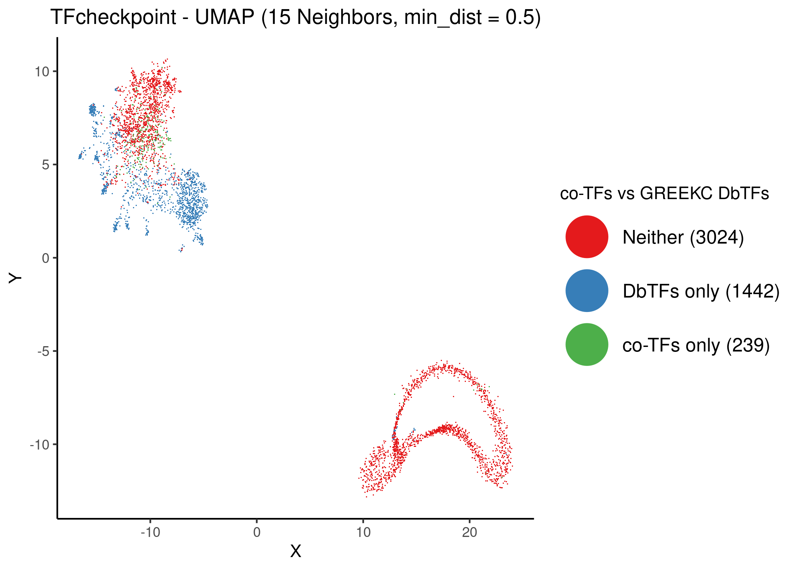
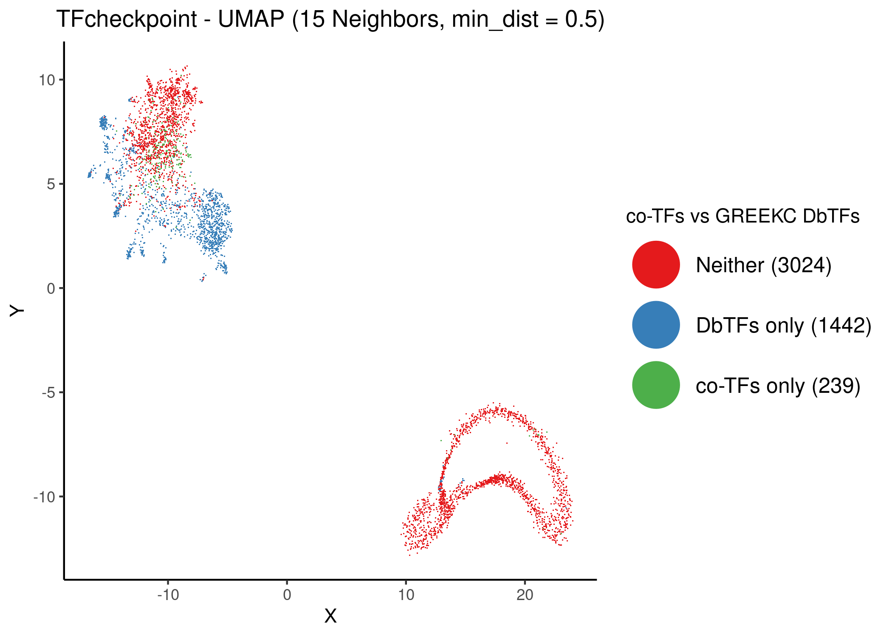
Figure 14: Unsupervised UMAP of the TFcheckpoint dataset using 15 neighbors and different values of the mind_dist parameter. Data points (proteins) have been colored according to their classification in the joint DbTF and co-TF GREEKC lists atop the 2D embedding
All above figures point to the following observations:
- There are two distinct superclusters, one of them with mostly no-TFs and the other with a mix of co-TFs, DbTFs and no-TFs.
- The proteins that are labeled neither as DbTF nor co-TF, do not reside in one, but two separate clusters, denoting thus two families of non-DbTF, non-co-TF proteins.
- The DbTFs also seem to be grouped into two clusters, a main one and a one more dispersed across the protein map.
- The co-TF cluster (green) seems to be a pure subset of the second no-TF cluster.
In order to make more clear the distinction between the clusters, we proceed to execute UMAP in supervised mode. The target data is exactly the \(3\) classes of proteins as demonstrated above:
- The class of GREEKC-curated DbTFs proteins
- The class of co-TFs
- The proteins that don’t belong to neither of the above two classes
Note that the default weighting factor between data topology and target topology has been used for the following classifications (\(0.5\)).
The resulting UMAP coordinates, colored with the above protein classification are as follows (for different number of neighbors):
knitr::include_graphics(path = 'img/sumap/tf_sumap_6n.png')
knitr::include_graphics(path = 'img/sumap/tf_sumap_8n.png') 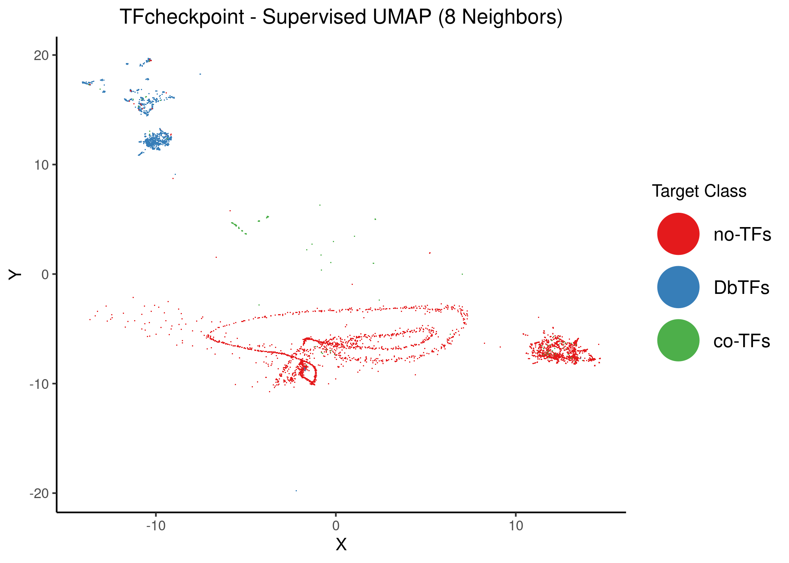
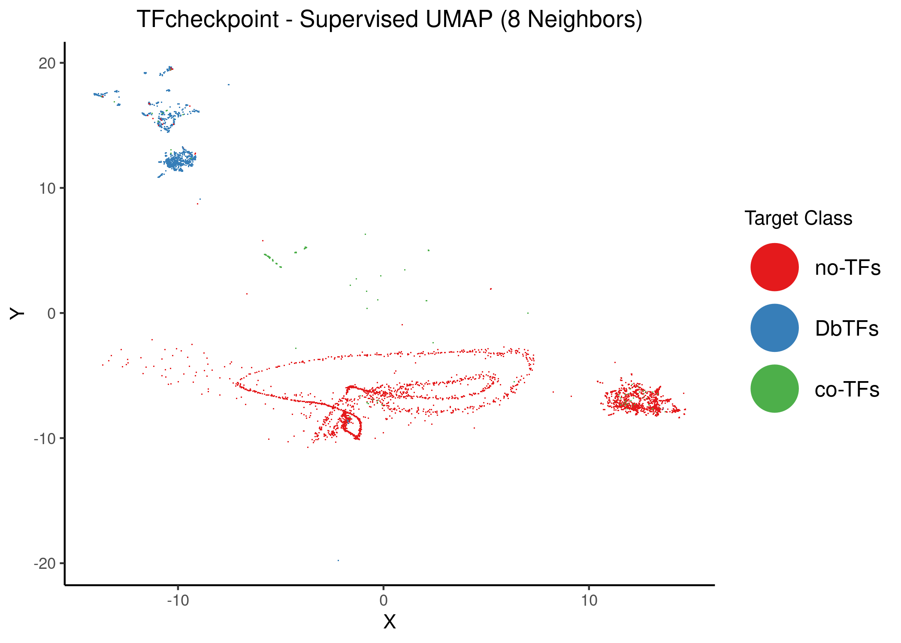
Figure 15: Supervised UMAP using 6 and 8 neighbors. Proteins are colored atop the 2D embedding based on the class that the dimension reduction used as target data. Default weighting factor between data topology and target topology has been used (0.5)
knitr::include_graphics(path = 'img/sumap/tf_sumap_10n.png')
knitr::include_graphics(path = 'img/sumap/tf_sumap_12n.png')

Figure 16: Supervised UMAP using 10 and 12 neighbors. Proteins are colored atop the 2D embedding based on the class that the dimension reduction used as target data. Default weighting factor between data topology and target topology has been used (0.5)
knitr::include_graphics(path = 'img/sumap/tf_sumap_14n.png')
knitr::include_graphics(path = 'img/sumap/tf_sumap_20n.png')
Figure 17: Supervised UMAP using 14 and 20 neighbors. Proteins are colored atop the 2D embedding based on the class that the dimension reduction used as target data. Default weighting factor between data topology and target topology has been used (0.5)
- \(2\) clusters of no-TF proteins
- \(2\) clusters of DbTF proteins
- The main co-TF cluster is now cut-off from the other two and more dispersed (note that there are some co-TFs in the no-TF cluster still, as there are few examples of proteins belonging to a different class than the cluster tag they reside into indicates)
In order to make the distinction even more clear, we take the \(14\) neighbors supervised case and annotate the respective clusters:
knitr::include_graphics(path = 'img/sumap/tf_sumap_14n_annot.png')Figure 18: Supervised UMAP using 14 neighbors. Proteins are colored atop the 2D embedding based on the class that the dimension reduction used as target data. Each respective cluster has been associated with a number. Default weighting factor between data topology and target topology has been used (0.5)
In the script interesting_cases.R we have filtered and extracted all the interesting cases that arise from the above figure, where proteins annotated in a particular category end up being in a cluster of another class: e.g. which co-TFs or no-TFs co-cluster with the DbTF-clusters \(1\) and \(2\)? Are there DbTFs in clusters \(4\) and \(5\) (since it’s pretty hard to see in the above figure)? See respective files in the online directory. The notation follows the above figure (\(1\) means the respective DbTF cluster, \(3\) the co-TF cluster, etc.).
Some distinct examples are:
SMAD6is annotated as a co-TF, but resides in the DbTF cluster No.\(2\)- The proteins
CAMTA1,HOPX,NR0B1are annotated as no-TFs, but reside in the DbTFs cluster No.\(2\) - Most members of the
THAPfamily of proteins are annotated as no-TFs, but reside in the co-TF cluster No.\(3\) - Most members of the
DUXandZNFfamily of proteins, are annotated as DbTFs, but reside in the no-TF cluster No.\(4\) PGBD1is annotated as a DbTF, but resides in the no-TF cluster No.\(5\)
(Schmeier et al. 2017) co-TF list
The (Schmeier et al. 2017) paper describes the 2nd (updated) version of a co-TF database. The full list includes \(958\) co-TFs and is given as a file here. From this co-TF list, \(426\) are included in the TFcheckpoint dataset (so a lot more than the GREEKC co-TF list) and a total of \(205\) co-TFs are common between the two co-TF lists.
Comparing the \(2\) co-TF sets with TFcheckpoint proteins, we have the following Venn diagram:
knitr::include_graphics(path = 'img/co_tf_venn.png')
Figure 19: Venn Diagram comparing the proteins listed in the TFcheckpoint dataset, the co-TF GREEKC list and the co-TF Schmeier2017 et. al (2017) database
Comparing the Schmeier et. al co-TF protein list with the GREEKC curated list of DbTFs we have the following contingency table (\(1\) corresponds to the existence of a particular label, \(0\) to it’s absence), where \(5\) proteins have been labeled as a co-TF and a DbTF:
db_cotf_stats = readRDS(file = 'data/db_schmeier_cotf_stats.rds')
knitr::kable(db_cotf_stats)| GREEKC-DbTF | Schmeier co-TF | n |
|---|---|---|
| 0 | 0 | 2842 |
| 1 | 0 | 1437 |
| 0 | 1 | 421 |
| 1 | 1 | 5 |
We now use the unsupervised UMAP result with \(12\) neighbors and color the proteins according to the four categories described above:
knitr::include_graphics(path = 'img/12n_extra/tf_umap_12n_co_vs_dbtfs_schmeier.png')Figure 20: Unsupervised UMAP of the TFcheckpoint dataset using 12 neighbors. Data points (proteins) have been colored according to their classification in the joint DbTF and co-TF Schmeier lists atop the 2D embedding
We perform the same coloring with the UMAP coordinates from the \(15\) neighbors and two different values of min_dist, to have a better picture of the clustering results:
knitr::include_graphics(path = 'img/cotf_vs_dbtf/tf_umap_15n_mindist_0.05_schmeier.png')
knitr::include_graphics(path = 'img/cotf_vs_dbtf/tf_umap_15n_mindist_0.5_schmeier.png')Figure 21: Unsupervised UMAP of the TFcheckpoint dataset using 15 neighbors. Data points (proteins) have been colored according to their classification in the joint DbTF and co-TF Schmeier lists atop the 2D embedding
We observe the same things as before regarding the generated clusters, only with a larger proportion of co-TFs in the corresponding cluster.
The \(5\) proteins that are annotated as both co-TFs and DbTFs are: ZNF587B, CC2D1A, NACC2, PGBD1, NACC1.
In order to make more clear the distinction between the clusters, we proceed to execute UMAP in supervised mode. The target data is exactly the \(4\) classes of proteins as demonstrated above:
- The class of GREEKC-curated DbTFs proteins
- The class of co-TFs from (Schmeier et al. 2017)
- The proteins that don’t belong to neither of the above two classes
- The \(5\) proteins that are annotated as both DbTFs and co-TFs
The resulting UMAP coordinates, colored with the above protein classification are as follows (we present only the result with \(14\) neighbors):
knitr::include_graphics(path = 'img/sumap/tf_sumap_14n_schmeier_annot.png')
Figure 22: Supervised UMAP using 14 neighbors. Proteins are colored atop the 2D embedding based on the class that the dimension reduction used as target data. Each respective cluster has been associated with a number. Default weighting factor between data topology and target topology has been used (0.5)
We make the same observations as above regarding the resulting clusters (\(2\) clusters in each category: no-TFs, DbTFs, co-TFs). The co-TF cluster that resides within one of the two no-TF clusters is now much more pronounced, since the current co-TF list is larger than the GREEKC one.
Access the cluster annotated data from the above figure here.
If we use a weighting factor exclusively dependent on the target topology, we get a better separation of the clusters (as expected):
knitr::include_graphics(path = 'img/sumap/tf_sumap_14n_w1_schmeier.png')
Figure 23: Supervised UMAP using 14 neighbors. Proteins are colored atop the 2D embedding based on the class that the dimension reduction used as target data. The weighting factor between data topology and target topology is 1 (mostly target topology/labeling is considered)
Analysis (New Dataset)
See script new_analysis.R for more details.
We show how to expand the GO and InterPro datasets to 0-1 matrices, how we annotated each protein’s class (as DbTF, coTF, Both or None), ran UMAP and produced the figures.
Get the GO matrix data here.
Protein Class Annotation
Each protein in TFch2 can belong to one of the following 4 classes: DbTF, coTF, Both or None.
Proteins were labeled as DNA-binding transcription factors if they belonged to the online list provided in (Lovering et al. 2021) (retrieved 2/11/2021, see file here).
For coTF labeling, we used two different annotation strategies explained in the two subsections below.
Proteins that had both the DbTF and coTF labels were classified as Both and as None if they had neither.
coTF Annotation 1
Proteins were labeled as co-transcription factors if they had at least one GO term annotation from this online list. This is a very relaxed definition for a coTF and will mainly be used for coloring the UMAP embedding of the InterPro domain dataset.
Given the different GO matrices (full, without IEA, and only with IEA GO terms) we get different distribution of protein class annotations:
| GO matrix | Both | coTF | DbTF | None |
|---|---|---|---|---|
| Full | 176 | 593 | 1261 | 1812 |
| no IEA | 90 | 463 | 1347 | 1942 |
| only IEA | 101 | 213 | 1336 | 2192 |
coTF Annotation 2
Proteins were labeled as co-transcription factors if they had either the GO term GO:0003712 or one of its child terms (see file here, produced 16/11/2021) OR they were annotated as coTFs in TcoF-DB v2 (Schmeier et al. 2017) (see file used with ids here).
Given the different GO matrices (all GO terms vs all without IEA) we get different distribution of protein class annotations:
| GO matrix | Both | coTF | DbTF | None |
|---|---|---|---|---|
| Full | 15 | 1170 | 1422 | 1235 |
| no IEA | 13 | 1151 | 1424 | 1254 |
- The only-IEA matrix is not used with this coloring since in the next section we will see that it does not distinguish the protein UMAP clusters as well as the other two. Curation matters!
- Using this curation-focused labeling of DbTFs and coTFs, we now observe just a very small number of proteins belonging to
Bothclasses.
InterPro vs GO vs Combined Dataset
In the following 5 subsections, we present the UMAP results using 5 different datasets/matrices:
- The InterPro matrix
- The full GO matrix
- The no IEA GO matrix
- The only IEA GO matrix
- The combined full GO matrix and InterPro matrix
The first coTF class annotation is used in the respective UMAP colorings.
Observations:
- The full GO dataset was more informative and provided more compact/cohesive classification of the proteins vs the InterPro dataset. Using both datasets we don’t see any significant improvement in the position of the UMAP sub-clusters vs using just the GO (full) matrix.
- The only-IEA GO dataset does not have enough information to correctly distniguish between DbTFs, coTFs and non-TFs.
InterPro Dataset
knitr::include_graphics(path = 'img/tfch2-InterPro/tfc2_umap_6n_interpro.png')
knitr::include_graphics(path = 'img/tfch2-InterPro/tfc2_umap_10n_interpro.png')
knitr::include_graphics(path = 'img/tfch2-InterPro/tfc2_umap_14n_interpro.png')
knitr::include_graphics(path = 'img/tfch2-InterPro/tfc2_umap_20n_interpro.png') 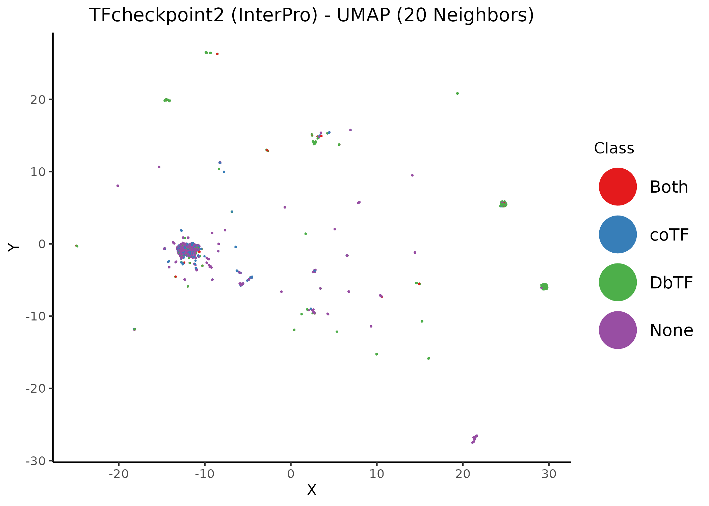
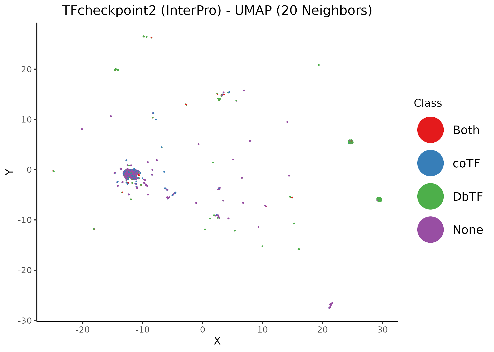
Figure 24: Unsupervised UMAP of the TFcheckpoint v2.0 dataset annotated using InterPro domains. Different values of the neighbors parameter per figure. Data points (proteins) have been colored according to their their respective class annotation (1).
GO (full) Dataset
knitr::include_graphics(path = 'img/tfch2-GO/tfc2_umap_6n_go.png')
knitr::include_graphics(path = 'img/tfch2-GO/tfc2_umap_10n_go.png')
knitr::include_graphics(path = 'img/tfch2-GO/tfc2_umap_14n_go.png')
knitr::include_graphics(path = 'img/tfch2-GO/tfc2_umap_20n_go.png') 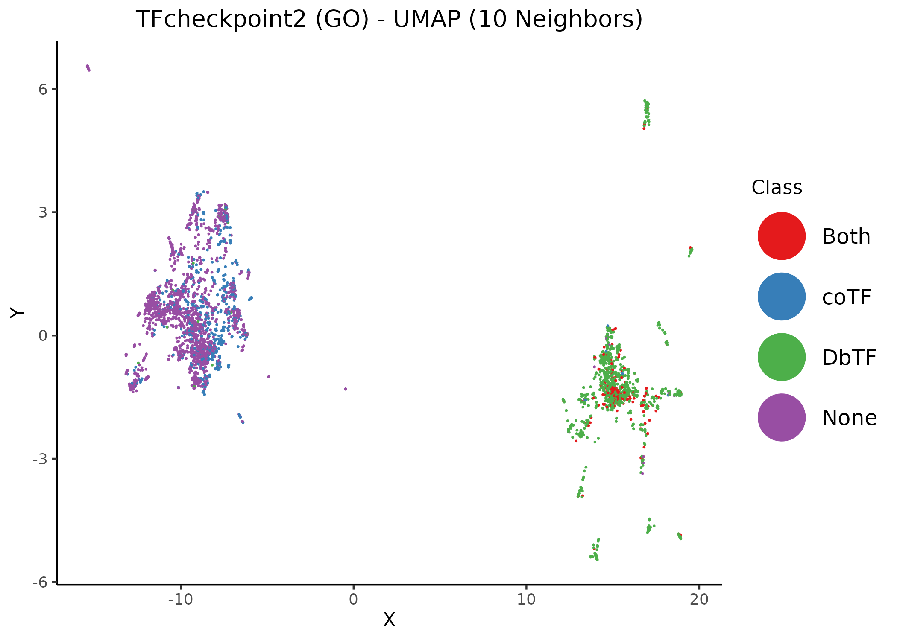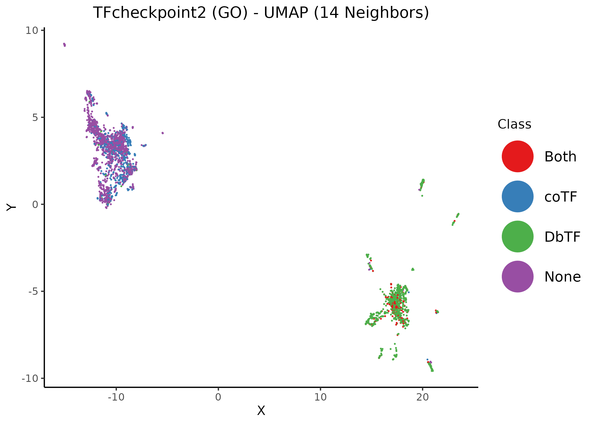
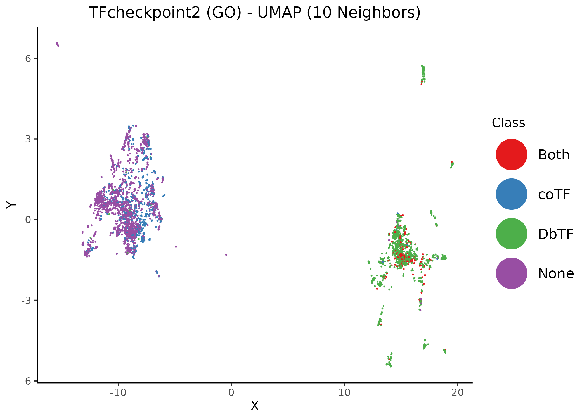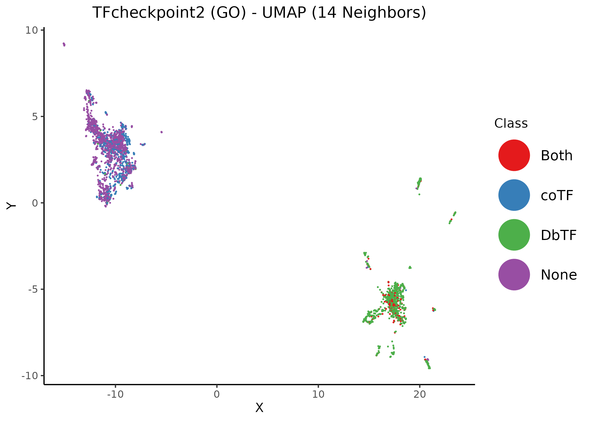
Figure 25: Unsupervised UMAP of the TFcheckpoint v2.0 dataset annotated using GO terms. Different values of the neighbors parameter per figure. Data points (proteins) have been colored according to their their respective class annotation (1).
GO (no IEA) Dataset
knitr::include_graphics(path = 'img/tfch2-GO/tfc2_umap_6n_go_no_iea.png')
knitr::include_graphics(path = 'img/tfch2-GO/tfc2_umap_10n_go_no_iea.png')
knitr::include_graphics(path = 'img/tfch2-GO/tfc2_umap_14n_go_no_iea.png')
knitr::include_graphics(path = 'img/tfch2-GO/tfc2_umap_20n_go_no_iea.png')Figure 26: Unsupervised UMAP of the TFcheckpoint v2.0 dataset annotated using GO terms with no IEA. Different values of the neighbors parameter per figure. Data points (proteins) have been colored according to their their respective class annotation (1).
GO (only IEA) Dataset
knitr::include_graphics(path = 'img/tfch2-GO/tfc2_umap_6n_go_only_iea.png')
knitr::include_graphics(path = 'img/tfch2-GO/tfc2_umap_10n_go_only_iea.png')
knitr::include_graphics(path = 'img/tfch2-GO/tfc2_umap_14n_go_only_iea.png')
knitr::include_graphics(path = 'img/tfch2-GO/tfc2_umap_20n_go_only_iea.png')Figure 27: Unsupervised UMAP of the TFcheckpoint v2.0 dataset annotated using GO terms associated only with IEA evidence. Different values of the neighbors parameter per figure. Data points (proteins) have been colored according to their their respective class annotation (1).
Combined Dataset
knitr::include_graphics(path = 'img/tfch2-combined/tfc2_umap_6n_combined.png')
knitr::include_graphics(path = 'img/tfch2-combined/tfc2_umap_10n_combined.png')
knitr::include_graphics(path = 'img/tfch2-combined/tfc2_umap_14n_combined.png')
knitr::include_graphics(path = 'img/tfch2-combined/tfc2_umap_20n_combined.png')


Figure 28: Unsupervised UMAP of the TFcheckpoint v2.0 dataset annotated using both InterPro domains and GO terms. Different values of the neighbors parameter per figure. Data points (proteins) have been colored according to their respective class annotation (1).
2nd coTF color annotation in UMAP using GO embeddings
- The 2nd coTF class annotation is used in the below UMAP figures for coloring.
- We use the UMAP embedding of two GO matrices: (1) the full and (2) the one with IEA GO terms removed
knitr::include_graphics(path = 'img/tfch2-GO/tfc2_umap_20n_go_class_2.png')
knitr::include_graphics(path = 'img/tfch2-GO/tfc2_umap_20n_go_no_iea_class_2.png')Figure 29: Unsupervised UMAP of the TFcheckpoint v2.0 dataset annotated using GO terms (with and without IEA). 20 neighbors. Data points (proteins) have been colored according to their respective class annotation (2).
For the results attained with the full GO matrix, we boxify UMAP’s clusters and provide a file with the cluster ids as shown in the figure below:
knitr::include_graphics(path = 'img/tfch2-GO/tfc2_umap_20n_go_class_2_with_boxes.png')Figure 30: Unsupervised UMAP of the TFcheckpoint v2.0 dataset annotated using all GO terms. 20 neighbors. Data points (proteins) have been colored according to their respective class annotation (2). Boxes correspond to the 8 UMAP clusters.
Using a more hierarchical renaming convention:
knitr::include_graphics(path = 'img/tfch2-GO/tfc2_umap_20n_go_class_2_with_boxes_new_cluster_ids.png')Figure 31: Unsupervised UMAP of the TFcheckpoint v2.0 dataset annotated using all GO terms. 20 neighbors. Data points (proteins) have been colored according to their respective class annotation (2). Boxes correspond to the 8 UMAP clusters. Ellipses correspond to 2 protein superclusters. Subclusters are annotated using alphabetical letters and correspond to increasing cluster sizes.
DeepTF color annotation in UMAP using GO embeddings
- Proteins with no DeepTF score are colored black
- We use the UMAP embedding of two GO matrices: (1) the full and (2) the one with IEA GO terms removed
knitr::include_graphics(path = 'img/tfch2-GO/tfc2_umap_20n_go_deeptf.png')
knitr::include_graphics(path = 'img/tfch2-GO/tfc2_umap_20n_go_no_iea_deeptf.png')Figure 32: Unsupervised UMAP of the TFcheckpoint v2.0 dataset annotated using GO terms (with and without IEA). 20 neighbors. Data points (proteins) have been colored according to their respective DeepTF score.
- DeepTF seems to correctly predict the DbTFs in the right-up cluster (score close to 1)
- Most proteins for which we couldn’t predict any score are in the no-TF/coTF left-down cluster
R session info
xfun::session_info()R version 3.6.3 (2020-02-29)
Platform: x86_64-pc-linux-gnu (64-bit)
Running under: Ubuntu 20.04.3 LTS
Locale:
LC_CTYPE=en_US.UTF-8 LC_NUMERIC=C
LC_TIME=en_US.UTF-8 LC_COLLATE=en_US.UTF-8
LC_MONETARY=en_US.UTF-8 LC_MESSAGES=en_US.UTF-8
LC_PAPER=en_US.UTF-8 LC_NAME=C
LC_ADDRESS=C LC_TELEPHONE=C
LC_MEASUREMENT=en_US.UTF-8 LC_IDENTIFICATION=C
Package version:
assertthat_0.2.1 base64enc_0.1.3 BH_1.75.0.0
bit_4.0.4 bit64_4.0.5 bookdown_0.24
bslib_0.3.1 cli_3.0.1 clipr_0.7.1
colorspace_2.0-2 compiler_3.6.3 cpp11_0.4.0
crayon_1.4.1 DBI_1.1.1 digest_0.6.28
dplyr_1.0.7 dqrng_0.3.0 ellipsis_0.3.2
evaluate_0.14 fansi_0.5.0 farver_2.1.0
fastmap_1.1.0 FNN_1.1.3 formatR_1.11
fs_1.5.0 futile.logger_1.4.3 futile.options_1.0.1
generics_0.1.0 ggforce_0.3.3 ggplot2_3.3.5
glue_1.4.2 graphics_3.6.3 grDevices_3.6.3
grid_3.6.3 gtable_0.3.0 highr_0.9
hms_1.1.1 htmltools_0.5.2 irlba_2.3.3
isoband_0.2.5 jquerylib_0.1.4 jsonlite_1.7.2
knitr_1.36 labeling_0.4.2 lambda.r_1.2.4
lattice_0.20-45 lifecycle_1.0.1 magrittr_2.0.1
MASS_7.3-54 Matrix_1.3-4 methods_3.6.3
mgcv_1.8.36 munsell_0.5.0 nlme_3.1.153
pillar_1.6.3 pkgconfig_2.0.3 png_0.1-7
polyclip_1.10-0 prettyunits_1.1.1 progress_1.2.2
purrr_0.3.4 R6_2.5.1 rappdirs_0.3.3
RColorBrewer_1.1.2 Rcpp_1.0.7 RcppAnnoy_0.0.19
RcppEigen_0.3.3.9.1 RcppProgress_0.4.2 readr_2.0.2
rlang_0.4.11 rmarkdown_2.11 RSpectra_0.16.0
sass_0.4.0 scales_1.1.1 sitmo_2.0.1
splines_3.6.3 stats_3.6.3 stringi_1.7.5
stringr_1.4.0 tibble_3.1.5 tidyr_1.1.4
tidyselect_1.1.1 tinytex_0.34 tools_3.6.3
tweenr_1.0.2 tzdb_0.1.2 utf8_1.2.2
utils_3.6.3 uwot_0.1.10 vctrs_0.3.8
VennDiagram_1.6.20 viridisLite_0.4.0 vroom_1.5.5
withr_2.4.2 xfun_0.26 yaml_2.2.1